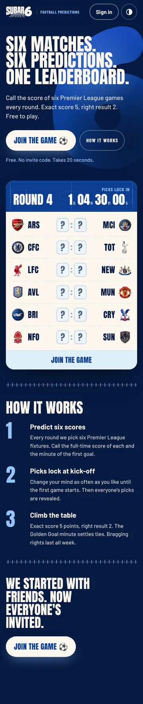
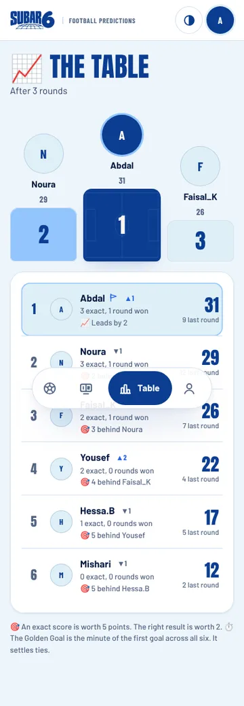
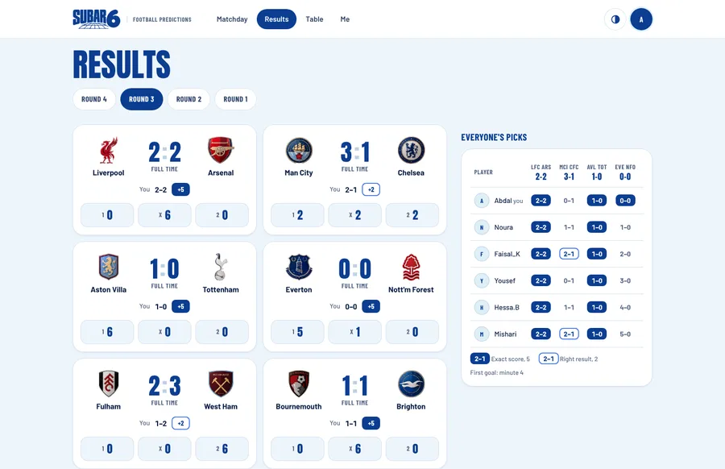
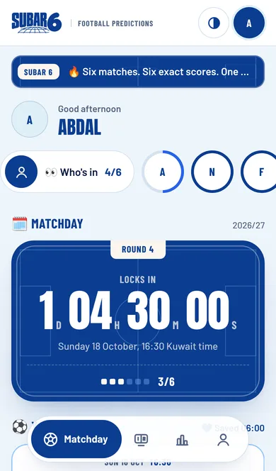
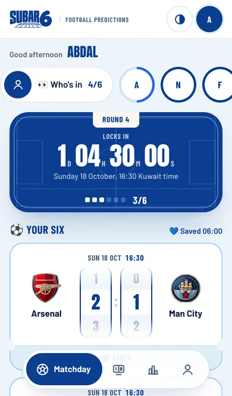
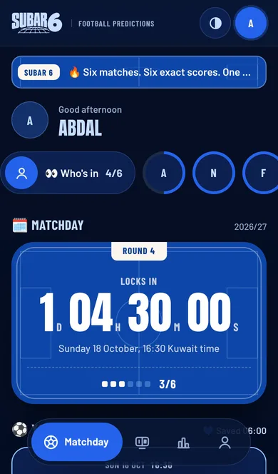
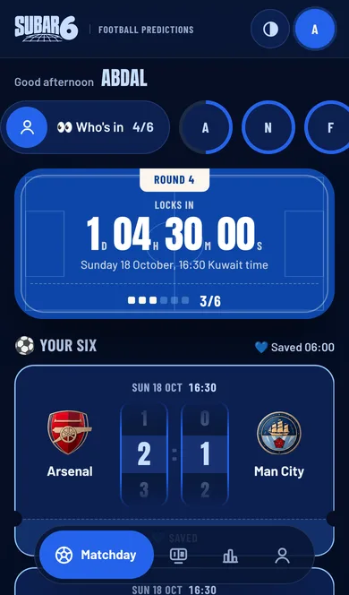

<title>Subar Sitta Report 14 Oct</title>
<link rel="preconnect" href="https://fonts.googleapis.com">
<link rel="preconnect" href="https://fonts.gstatic.com" crossorigin>
<link rel="stylesheet" href="https://fonts.googleapis.com/css2?family=Anton&family=Barlow+Condensed:wght@700&family=Barlow:wght@400;500;600;700&display=swap">
<style>
/* Layout: one reading column like a matchday programme; the SUBAR 6 royal/ice system, ticket-style cards for findings */
:root{
  --bg:#EEF5FB;--card:#FFFFFF;--ink:#061A40;--ink-2:#2D4167;--ink-3:#536583;--royal:#0B3D91;--cobalt:#2563EB;--pale:#DEEFF7;--ivory:#FBF6EE;--rule:#D3E2F1;
  --good:#0B6B4F;--good-bg:#DDF3EA;--warn:#8A4B00;--warn-bg:#FCEFD9;--bad:#9B1C1C;--bad-bg:#FBE3E3;--on-royal:#FBF6EE;--on-royal-2:#BCD3F2;
  --display:"Anton","Impact","Arial Narrow",sans-serif;--label:"Barlow Condensed","Arial Narrow",sans-serif;--body:"Barlow",system-ui,-apple-system,"Segoe UI",sans-serif;
}
@media (prefers-color-scheme:dark){:root:not([data-theme="light"]){
  --bg:#050E24;--card:#0C2050;--ink:#EEF5FB;--ink-2:#BCCDE8;--ink-3:#93A8CB;--royal:#0E46A8;--cobalt:#8CBBFF;--pale:#13306B;--ivory:#FBF6EE;--rule:#1D3A75;
  --good:#7BE0B8;--good-bg:#0F3A33;--warn:#FFC978;--warn-bg:#3A2A10;--bad:#FFA3A3;--bad-bg:#45161C;--on-royal:#FBF6EE;--on-royal-2:#BCD3F2;color-scheme:dark}}
:root[data-theme="dark"]{
  --bg:#050E24;--card:#0C2050;--ink:#EEF5FB;--ink-2:#BCCDE8;--ink-3:#93A8CB;--royal:#0E46A8;--cobalt:#8CBBFF;--pale:#13306B;--ivory:#FBF6EE;--rule:#1D3A75;
  --good:#7BE0B8;--good-bg:#0F3A33;--warn:#FFC978;--warn-bg:#3A2A10;--bad:#FFA3A3;--bad-bg:#45161C;--on-royal:#FBF6EE;--on-royal-2:#BCD3F2;color-scheme:dark}
*{box-sizing:border-box}
body{background:var(--bg);color:var(--ink);font:400 16px/1.55 var(--body);margin:0}
.page{max-width:820px;margin:0 auto;padding-inline:16px;padding-block:20px 56px;display:flex;flex-direction:column;gap:28px}
h1,h2,h3{margin:0;text-wrap:balance}
h2{font:400 30px/1.05 var(--display);text-transform:uppercase;color:var(--royal)}
:root:not([data-theme="light"]) h2{color:var(--ink)}
h3{font:700 18px/1.25 var(--body)}
p{margin:0}
.eyebrow{font:700 13px/1 var(--label);text-transform:uppercase;letter-spacing:.08em;color:var(--ink-3)}
.sec{display:flex;flex-direction:column;gap:14px}
.sec>.eyebrow{display:flex;gap:10px;align-items:center}
.sec>.eyebrow b{font:400 15px/1 var(--display);color:var(--cobalt);letter-spacing:0}

/* masthead: the hero card */
.hero{background:var(--royal);color:var(--on-royal);border-radius:28px;padding:26px 22px 22px;display:flex;flex-direction:column;gap:14px;position:relative;overflow:hidden}
.hero::before{content:"";position:absolute;inset:7px;border-radius:22px;box-shadow:inset 0 0 0 1.5px rgba(251,246,238,.32);pointer-events:none}
.hero .eyebrow{color:var(--on-royal-2)}
.hero h1{font:400 clamp(36px,9vw,56px)/.95 var(--display);text-transform:uppercase}
.hero p{color:var(--on-royal-2);max-width:60ch}
.verdict{display:inline-flex;align-self:flex-start;gap:8px;align-items:center;background:var(--ivory);color:#0B3D91;border-radius:999px;padding:7px 14px;font:700 14px/1 var(--label);text-transform:uppercase;letter-spacing:.05em}
.verdict i{width:9px;height:9px;border-radius:50%;background:#0B6B4F;display:block}

.stats{display:grid;grid-template-columns:repeat(auto-fit,minmax(150px,1fr));gap:10px}
.stat{background:var(--card);border-radius:16px;padding:14px 16px;display:flex;flex-direction:column;gap:4px;min-width:0}
.stat b{font:400 30px/1 var(--display);color:var(--ink);font-variant-numeric:tabular-nums}
.stat span{font-size:13px;color:var(--ink-2);line-height:1.35}

.card{background:var(--card);border-radius:20px;padding:18px;display:flex;flex-direction:column;gap:10px;min-width:0}
.card p,.card li{color:var(--ink-2)}
.card ul{margin:0;padding-inline-start:20px;display:flex;flex-direction:column;gap:4px}
.row{display:flex;flex-wrap:wrap;gap:8px;align-items:center}
.tag{font:700 12px/1 var(--label);text-transform:uppercase;letter-spacing:.06em;padding:5px 8px;border-radius:6px;white-space:nowrap}
.m{background:var(--pale);color:var(--royal)} :root:not([data-theme="light"]) .m{color:var(--ink)}
.h{background:transparent;color:var(--ink-3);box-shadow:inset 0 0 0 1.5px var(--rule)}
.s-high{background:var(--bad-bg);color:var(--bad)} .s-med{background:var(--warn-bg);color:var(--warn)} .s-low{background:var(--pale);color:var(--ink-2)} .s-fixed{background:var(--good-bg);color:var(--good)}
.ev{font-size:14px;color:var(--ink-3)} .ev code{font-size:13px}
code{font-family:ui-monospace,SFMono-Regular,Menlo,monospace;font-size:.88em;background:var(--pale);padding:1px 5px;border-radius:5px;color:var(--ink)}

/* findings as tickets: stub on the left carries the severity */
.ticket{display:grid;grid-template-columns:auto minmax(0,1fr);background:var(--card);border-radius:18px;overflow:hidden}
.ticket .stub{background:var(--pale);padding:16px 10px;display:flex;align-items:flex-start;justify-content:center;border-inline-end:2px dashed var(--rule);min-width:58px}
.ticket .stub span{font:400 22px/1 var(--display);color:var(--royal)} :root:not([data-theme="light"]) .ticket .stub span{color:var(--ink)}
.ticket .body{padding:14px 16px;display:flex;flex-direction:column;gap:8px;min-width:0}
.ticket .body p{color:var(--ink-2)}

.shots{display:grid;grid-template-columns:repeat(2,minmax(0,1fr));gap:12px}
figure{margin:0;display:flex;flex-direction:column;gap:6px;min-width:0}
figure img{width:100%;height:auto;border-radius:14px;display:block;box-shadow:0 0 0 1px var(--rule)}
figcaption{font-size:13px;color:var(--ink-3)}
.wide img{border-radius:12px}

.tbl{overflow-x:auto;background:var(--card);border-radius:18px}
table{border-collapse:collapse;width:100%;min-width:620px;font-size:14px}
th,td{text-align:start;padding:10px 12px;border-bottom:1px solid var(--rule);vertical-align:top;color:var(--ink-2)}
th{font:700 12px/1.2 var(--label);text-transform:uppercase;letter-spacing:.06em;color:var(--ink-3)}
td:first-child{color:var(--ink);font-weight:600}
tr:last-child td{border-bottom:0}
.num{font-variant-numeric:tabular-nums}

.rec{background:var(--royal);color:var(--on-royal);border-radius:24px;padding:22px;display:flex;flex-direction:column;gap:10px}
.rec h2{color:var(--on-royal)} .rec p{color:var(--on-royal-2)} .rec .eyebrow{color:var(--on-royal-2)}
.ask{display:flex;flex-direction:column;gap:10px;counter-reset:a;margin:0;padding:0;list-style:none}
.ask li{background:var(--card);border-radius:16px;padding:14px 16px 14px 52px;position:relative;color:var(--ink-2)}
.ask li::before{counter-increment:a;content:counter(a);position:absolute;left:16px;top:12px;font:400 24px/1 var(--display);color:var(--cobalt)}
.ask b{color:var(--ink)}
a{color:var(--cobalt)}
a:focus-visible{outline:2px solid var(--cobalt);outline-offset:2px;border-radius:3px}
.foot{font-size:13px;color:var(--ink-3)}
@media (max-width:520px){.shots{grid-template-columns:minmax(0,1fr) minmax(0,1fr);gap:8px}h2{font-size:26px}}
</style>

<main class="page">

<header class="hero">
  <span class="eyebrow">Product intelligence · Wed 14 Oct 2026 · Report 01 (baseline)</span>
  <h1>Healthy, correct, and one scroll too slow to pick</h1>
  <p>The live site and database are up, the scoring rules hold under 34 database checks, and the core journeys pass on phone and desktop. The biggest problem is on phones: the first score drum sits below the first screen.</p>
  <span class="verdict"><i></i>Green · no critical issues</span>
</header>

<section class="sec" aria-labelledby="s1">
  <span class="eyebrow"><b>1</b> Executive summary</span>
  <h2 id="s1">Product health</h2>
  <div class="stats">
    <div class="stat"><b class="num">200</b><span>Site, assets and database all answering (live, 00:11 UTC) <span class="tag m">Measured</span></span></div>
    <div class="stat"><b class="num">384<small style="font-size:16px">ms</small></b><span>Home page response from GitHub's runner; database 844 ms (one sample) <span class="tag m">Measured</span></span></div>
    <div class="stat"><b class="num">34/34</b><span>Scoring, Golden Goal and access-rule checks pass on the real migrations <span class="tag m">Measured</span></span></div>
    <div class="stat"><b class="num">48/48</b><span>Journey + visual tests pass, iPhone 13 and 1440 px, light and dark <span class="tag m">Measured</span></span></div>
    <div class="stat"><b class="num">3.9<small style="font-size:16px">s</small></b><span>Until the first score drum works on a throttled phone (mocked data) <span class="tag m">Measured</span></span></div>
    <div class="stat"><b class="num">0</b><span>WCAG AA violations after today's fix (was 1, on 2 screens) <span class="tag m">Measured</span></span></div>
    <div class="stat"><b class="num">89</b><span>Lighthouse performance, live landing, mobile (median of 3); accessibility 100 <span class="tag m">Measured</span></span></div>
    <div class="stat"><b class="num">3.5<small style="font-size:16px">s</small></b><span>Largest Contentful Paint, live, mobile. Google's "good" is under 2.5 s. CLS 0, blocking time 0 <span class="tag m">Measured</span></span></div>
  </div>
  <div class="card">
    <p><b style="color:var(--ink)">Live state:</b> round 2 is open; picks lock Sat 17 Oct, 14:30 Kuwait. The autopilot is keeping up (no unsettled or stale rounds).</p>
    <p><b style="color:var(--ink)">What I could not measure yet:</b> real-user Core Web Vitals (only lab Lighthouse so far), logged-in journeys on real data (no staging project or test account exists, and I will not use production), and engagement or retention (no analytics are collected).</p>
  </div>
</section>

<section class="sec" aria-labelledby="s2">
  <span class="eyebrow"><b>2</b> Bugs, with evidence</span>
  <h2 id="s2">What's wrong</h2>

  <article class="ticket"><div class="stub"><span>B1</span></div><div class="body">
    <div class="row"><span class="tag s-med">Medium · rules</span><span class="tag m">Measured</span></div>
    <h3>"The Golden Goal settles ties" is only true for round winners</h3>
    <p>The rules on the landing page, matchday and table say the Golden Goal settles ties. In the season table it is never used: ties fall to exact scores, then rounds won, then <b>whoever joined first</b>. Two players level on everything are ordered by sign-up date.</p>
    <p class="ev">Reproduced in <code>tests/sql/scoring.sql</code>: three players on 7 points; the table orders them Alpha, Charlie, Bravo by exact scores and rounds won, with join date as the final split. Source: <code>leaderboard()</code> in <code>supabase/update-02-public.sql</code>.</p>
    <p>This is a scoring-rule decision, so I have not changed anything. Your options are in "Needs your decision" below.</p>
  </div></article>

  <article class="ticket"><div class="stub"><span>B2</span></div><div class="body">
    <div class="row"><span class="tag s-med">Medium · navigation</span><span class="tag m">Measured</span></div>
    <h3>The back button leaves the app</h3>
    <p>Moving between Matchday, Results, Table and Me replaces the history entry instead of adding one, and the app does not listen for address changes. On Android, the back gesture from Results closes Subar Sitta instead of returning to Matchday. A shared <code>subarsitta.com/#table</code> link opened in an existing tab does nothing.</p>
    <p class="ev">Found while writing the journey tests: navigating from <code>#round</code> to <code>#table</code> by URL left the page unchanged. Source: <code>go()</code> in <code>app.js</code> uses <code>history.replaceState</code>, and there is no <code>hashchange</code> listener.</p>
  </div></article>

  <article class="ticket"><div class="stub"><span>B3</span></div><div class="body">
    <div class="row"><span class="tag s-low">Low · fairness</span><span class="tag m">Measured (database)</span><span class="tag h">UI from code reading</span></div>
    <h3>Co-winners of a round: only one is celebrated</h3>
    <p>The database correctly marks two players as round winners when they tie on points and Golden Goal distance (checked in the SQL tests). The winner card on Matchday shows only the first row, so the other winner is left out.</p>
    <p class="ev">Source: <code>winCard()</code> in <code>app.js</code> uses <code>board(r.id)[0]</code>.</p>
  </div></article>

  <article class="ticket"><div class="stub"><span>B4</span></div><div class="body">
    <div class="row"><span class="tag s-low">Low · copy</span><span class="tag m">Measured</span></div>
    <h3>The rotating banner is cut off on phones</h3>
    <figure class="wide"><figcaption>iPhone 13: text overflows its box (scrollWidth &gt; clientWidth).</figcaption></figure>
  </div></article>

  <article class="ticket"><div class="stub"><span>B5</span></div><div class="body">
    <div class="row"><span class="tag s-fixed">Fixed in PR</span><span class="tag m">Measured</span></div>
    <h3>Installed app still described as private</h3>
    <p>The app manifest said "Private football predictions for Town House 10". Phones show this when a player installs Subar Sitta. Now it matches the public pitch.</p>
  </div></article>

  <article class="ticket"><div class="stub"><span>B6</span></div><div class="body">
    <div class="row"><span class="tag s-fixed">Fixed in PR</span><span class="tag m">Measured</span></div>
    <h3>Rank-up arrow failed contrast on your own table row</h3>
    <p>Cobalt "▲1" on your highlighted pale row measured 4.37:1; WCAG AA needs 4.5:1. It now uses the brand blue. Axe-core reports 0 violations on landing, matchday, results and table in both themes.</p>
  </div></article>

  <div class="card">
    <h3>Edge cases checked and working</h3>
    <ul>
      <li>An unpicked fixture and a 0–0 pick are different everywhere: in the drum, the saved data and the scoring (no pick scores 0; 0–0 on 0–0 scores 5).</li>
      <li>A half-entered score is never sent, and the card says "Add the other score". The database rejects half picks too.</li>
      <li>After the deadline the drums disappear and the database refuses edits, picks for other players, and players making themselves admin.</li>
      <li>A failed save shows "Not saved" with Try again, and Try again recovers.</li>
      <li>Golden Goal: 45+2 counts as 45, 90+3 as 90, own goals count, missed penalties don't, and a postponed fixture scores for nobody.</li>
    </ul>
  </div>
</section>

<section class="sec" aria-labelledby="s3">
  <span class="eyebrow"><b>3</b> Visual review</span>
  <h2 id="s3">What the screens show</h2>
  <div class="shots">
    <figure><figcaption>Landing, phone. Strongest screen: clear promise, a real ticket, one call to action repeated.</figcaption></figure>
    <figure><figcaption>Table, phone. The "3 behind Noura" rival lines are the most engaging copy in the app.</figcaption></figure>
  </div>
  <figure class="wide"><figcaption>Results, desktop. Dense but readable. The 1/X/2 split per match is a good touch.</figcaption></figure>
  <div class="card">
    <h3>Observations</h3>
    <ul>
      <li><b>Phone matchday is long:</b> 3,822 px for six picks and a Golden Goal. Each fixture card is 214 px tall. <span class="tag m">Measured</span></li>
      <li><b>Three greetings before the first pick:</b> banner, "Good afternoon ABDAL" with a second avatar (your initial is already in the header), and a "Matchday 2026/27" heading that repeats the hero. <span class="tag h">Hypothesis</span>: this is the main source of clutter above the fold.</li>
      <li><b>Deadlines are shown only in Kuwait time.</b> Fine for the founding group; confusing for anyone else now that the game is open to everyone. <span class="tag h">Hypothesis</span></li>
      <li><b>Dark theme</b> is consistent; the locked state reads well. No layout breaks at 390 px or 1440 px. <span class="tag m">Measured</span></li>
      <li><b>Brand note:</b> your brief describes Subar Sitta as bilingual Arabic/English. The live code is English-only (the v6 design system says so explicitly); Arabic copy was removed in v6. I have not changed this; see "Needs your decision".</li>
    </ul>
  </div>
</section>

<section class="sec" aria-labelledby="s4">
  <span class="eyebrow"><b>4–6</b> Opportunities, previews and player benefit</span>
  <h2 id="s4">Three highest-value improvements</h2>

  <article class="card">
    <div class="row"><span class="tag m">#1 · prototyped</span><span class="tag m">Measured</span></div>
    <h3>Put the first pick on the first screen (compact phone matchday)</h3>
    <p>On an iPhone 13 the first score drum starts at 665 px, below the 586 px of screen left above the dock. A player opening the app to make picks sees greetings and a countdown, then has to scroll. The prototype drops the duplicate avatar, banner and "Matchday" heading on phones, puts the greeting on one line and tightens the hero. Same components, same brand, CSS only.</p>
    <div class="shots">
      <figure><figcaption><b>Before.</b> First drum at 665 px: off screen.</figcaption></figure>
      <figure><figcaption><b>After.</b> First drum at 447–567 px: fully usable.</figcaption></figure>
      <figure><figcaption>Before, dark.</figcaption></figure>
      <figure><figcaption>After, dark.</figcaption></figure>
    </div>
    <p><b style="color:var(--ink)">Measured effect (iPhone 13, mocked round):</b> first drum −218 px (665 → 447) and fully above the dock; Golden Goal −218 px (1,979 → 1,761); page 3,822 → 3,604 px. <b style="color:var(--ink)">Player benefit</b> <span class="tag h">Hypothesis</span>: opening the app lands you on a pick, which should mean fewer half-finished rounds. Confirming that needs completion data (see the analytics ask).</p>
    <p class="ev">Prototype: <code>ops/proposals/2026-10-14-compact-matchday.css</code> (not live).</p>
  </article>

  <article class="card">
    <div class="row"><span class="tag m">#2</span><span class="tag h">Hypothesis</span></div>
    <h3>Back button and links that work</h3>
    <p>Push a history entry per section and listen for <code>hashchange</code>, so back returns to the previous section and <code>#table</code> links open the table. About 6 lines in <code>go()</code> and boot. <b style="color:var(--ink)">Benefit:</b> the app behaves like every other app on Android, and players can share a link to the table after a round.</p>
  </article>

  <article class="card">
    <div class="row"><span class="tag m">#3</span><span class="tag m">Measured cost</span><span class="tag h">Gain not yet measured</span></div>
    <h3>Paint the page before the database library loads</h3>
    <p>Live Lighthouse puts Largest Contentful Paint at 3.5 s on mobile, the one metric outside Google's "good" band. Locally, first paint equals DOMContentLoaded (2.24 s on the throttled phone profile) because the page is empty until all three scripts run, and <code>vendor/supabase.js</code> is 213 KB of the 282 KB of JavaScript. Rendering the loading screen or landing shell first, then loading Supabase, should bring first paint forward. I will benchmark it against the live site's compressed delivery before claiming any gain.</p>
  </article>
</section>

<section class="sec" aria-labelledby="s7">
  <span class="eyebrow"><b>7</b> Tested changes</span>
  <h2 id="s7">What I built today</h2>
  <div class="card">
    <ul>
      <li><b style="color:var(--ink)">Database tests</b> that load the real <code>setup.sql</code> and <code>update-02-public.sql</code> into Postgres and run 34 checks on scoring, Golden Goal, winners, table order and access rules.</li>
      <li><b style="color:var(--ink)">Browser tests</b> with a fake Supabase that never reaches production: 10 journeys × 2 devices, plus 28 visual baseline screens.</li>
      <li><b style="color:var(--ink)">GitHub Actions</b>: CI on every push; a 15-minute live monitor that opens and closes an <code>outage</code> issue (first live run passed); nightly regression, live smoke, phone performance and Lighthouse (first run passed). On GitHub's first run the SQL tests and all 20 journeys passed; 8 of 28 screenshots differed by about 2% because the baselines were made on a different machine, so they are being regenerated in GitHub's own container.</li>
      <li><b style="color:var(--ink)">Two fixes</b>: the manifest copy and the contrast of the rank arrow (1 → 0 axe violations).</li>
      <li><b style="color:var(--ink)">Protection</b>: <code>.vercelignore</code> keeps tests, ops files and the SQL setup files off subarsitta.com once merged.</li>
    </ul>
    <p class="ev">Phone performance baseline (median of 3, 4× CPU slowdown, 150 ms RTT, 1.6 Mbps, uncompressed, mocked data). Landing: first paint 2,243 ms, 590 KB, 28 requests. Matchday: first paint 2,240 ms, first drum usable 3,859 ms, 659 KB, 63 requests.</p>
  </div>
</section>

<section class="sec" aria-labelledby="s8">
  <span class="eyebrow"><b>8</b> Impact, effort, risk, confidence</span>
  <h2 id="s8">Scorecard</h2>
  <div class="tbl"><table>
    <thead><tr><th scope="col">Item</th><th scope="col">Impact</th><th scope="col">Effort</th><th scope="col">Risk</th><th scope="col">Confidence</th></tr></thead>
    <tbody>
      <tr><td>Compact phone matchday</td><td>High: every player, every round</td><td>~15 lines CSS</td><td>Low; drops the banner on phones only</td><td>High on layout (measured); medium on behaviour</td></tr>
      <tr><td>Clarify tie-break rule (B1)</td><td>High when ties happen: disputes</td><td>Copy: minutes. Rule change: a database change</td><td>None for copy; rule change needs your call</td><td>High (measured)</td></tr>
      <tr><td>Back button and links (B2)</td><td>Medium: Android players</td><td>~6 lines JS</td><td>Low; covered by the journey tests</td><td>High</td></tr>
      <tr><td>Paint before Supabase loads</td><td>Medium: live LCP 3.5 s on mobile</td><td>Small boot reorder</td><td>Medium: auth start-up order</td><td>Medium until benchmarked</td></tr>
      <tr><td>Show co-winners (B3)</td><td>Low–medium: fairness</td><td>Small</td><td>Low</td><td>High</td></tr>
      <tr><td>Banner truncation (B4)</td><td>Low</td><td>Copy or CSS</td><td>None</td><td>High</td></tr>
    </tbody>
  </table></div>
</section>

<section class="rec" aria-labelledby="s9">
  <span class="eyebrow"><b style="color:var(--ivory)">9</b> Today's strongest recommendation</span>
  <h2 id="s9">Put the first pick on the first screen</h2>
  <p>Approve the compact phone matchday. It is the change every player feels every round, it is CSS only, and it keeps every Subar Sitta element. Say yes and I will apply it to the stylesheet, refresh the visual baselines and open it as a pull request with a Vercel preview to try on your phone.</p>
</section>

<section class="sec" aria-labelledby="s10">
  <span class="eyebrow">Needs your decision or access</span>
  <h2 id="s10">Over to you</h2>
  <ol class="ask">
    <li><b>Tie-breaks (B1).</b> Should the season table use the Golden Goal, for example total Golden Goal distance, before join date? Or keep the current order and change the copy to "settles round ties"? I won't change scoring without you.</li>
    <li><b>Arabic.</b> Bring back Arabic with right-to-left layouts, or stay English-only as v6 decided?</li>
    <li><b>Review and merge the infrastructure pull request.</b> Scheduled monitoring and the nightly run only start once it is on main.</li>
    <li><b>Turn on the Claude routines.</b> They exist but are paused because they start without access to the repository. In claude.ai → Code → Routines, add <code>il3out/subar-sitta</code> to each "Subar Sitta" routine and enable it.</li>
    <li><b>Staging.</b> A free second Supabase project plus one test account would let me test sign-up, saving and editing against real database rules without touching players' data.</li>
    <li><b>Network.</b> Allow <code>subarsitta.com</code> and the Supabase host in the cloud environment's network settings so routines can check the live site directly.</li>
    <li><b>Analytics (optional).</b> Completion, save failures and retention can't be measured today. Counts from the database (rounds completed and saves per player) would answer most of it without tracking anyone.</li>
  </ol>
</section>

<p class="foot">Method: the static site served locally, Supabase replaced by a mock, the clock fixed at Sat 17 Oct 12:00 Kuwait for stable screenshots, iPhone 13 (390×664 viewport) and 1440×900. Live checks from GitHub Actions, read-only and signed out. Evidence files are in <code>ops/reports/2026-10-14/</code> on branch <code>claude/modest-newton-t5pn2o</code>.</p>
</main>
